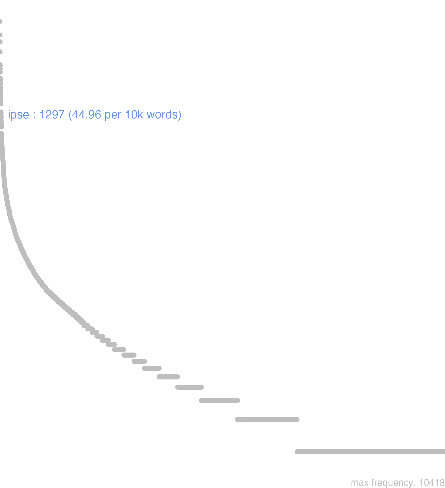

79 ipse
79.0.0.1 bases lexicais
id: http://lila-erc.eu/data/id/lemma/108945
classe: determinante
paradigma: 1ª classe, pronominal (tema em -a/o-)
outras grafias: eapse, ipsemet, ipsepte, isse
variantes do lema:
no data
ipsĕ
no data
79.0.0.2 dicionários tradicionais
eapse eampse
formas antigas de abla. e de acus. de pron. ipse Plaut. Aul. 815.
eōpse
= ipso Plaut. Curc. 538.
eūmpse
= ipsum, v. is.
ipse -a -um
pron. demonstr.
Obs.: Tem um valor intensivo e serve para pôr em evidência uma pessoa ou coisa, ou para a contrapor a outras.
pron. demonstr.
formas antigas de abla. e de acus. de pron. ipse Plaut. Aul. 815.
eōpse
= ipso Plaut. Curc. 538.
eūmpse
= ipsum, v. is.
ipse -a -um
pron. demonstr.
Obs.: Tem um valor intensivo e serve para pôr em evidência uma pessoa ou coisa, ou para a contrapor a outras.
1 O próprio, a própria, ele próprio, ela própria, eu próprio, tu próprio:
2 Exatamente, precisamente junto a um numeral, geralmente:
3 Por si mesmo, espontaneamente Cíc. Div. J. 74.
4 Por si só Cíc. Br. 289.
[EXEMPLOS]
1
ipse Caesar Cíc. Fam. 6. 10, 2 «o próprio César».
2
triennio ipso minor Cíc. Br. 161 «justamente três anos mais moço»: Cíc. Verr. 5. 160.
pron. demonstr.
1 O próprio:
[EXEMPLOS]
1
ipsimet Cíc. Verr. 3, 3 «nós mesmos».
ipsi
gen. arc. de ipse.
no data
Eampse
Plaut. por Eam ipsam. Eapse
Plaut. por Ea ipsa. Ipse ipsa ipsum
Plaut. por Eam ipsam. Eapse
Plaut. por Ea ipsa. Ipse ipsa ipsum
1 Cic. mesmo, mesma.
Ipse -a -um
Ipsissimus superl. apud Plaut.
Ipsissimus superl. apud Plaut.
1 o mesmo
2 ipsi in plur. pro integri, vel toti apud Cic.
[EXEMPLOS]
1
ego ipse, tu ipse, ille ipse
ipsemet id est, ipse per se, & non per alios
2
triginta dies erant ipsi, quum, & c
no data
79.0.0.3 dados de corpus
![This chart plots collocate by scoreSUBST, for the headword ipse here are all the values plotted: collocate: sui; scoreSUBST: 0. collocate: ego; scoreSUBST: 0. collocate: tu; scoreSUBST: 0. collocate: hic; scoreSUBST: 0. collocate: locus; scoreSUBST: 2. collocate: is; scoreSUBST: 0. collocate: cum; scoreSUBST: 0. collocate: per; scoreSUBST: 0. collocate: in; scoreSUBST: 0. collocate: ille; scoreSUBST: 0. collocate: quidem; scoreSUBST: 0. collocate: ab; scoreSUBST: 0. collocate: natura; scoreSUBST: 2. collocate: enim; scoreSUBST: 0. collocate: tamen; scoreSUBST: 0. collocate: res; scoreSUBST: 1. collocate: ex; scoreSUBST: 0. collocate: dies; scoreSUBST: 2. collocate: denique; scoreSUBST: 0. collocate: uero; scoreSUBST: 0. collocate: loquor; scoreSUBST: 0. collocate: iubeo; scoreSUBST: 0. collocate: propter; scoreSUBST: 0. collocate: Iuppiter; scoreSUBST: 0. collocate: uictoria; scoreSUBST: 2. collocate: consolor; scoreSUBST: 0. collocate: sicut; scoreSUBST: 0. collocate: cupio; scoreSUBST: 0. collocate: delecto; scoreSUBST: 0. collocate: secedo; scoreSUBST: 0. collocate: uiscus; scoreSUBST: 2. collocate: mundus; scoreSUBST: 2. collocate: fruor; scoreSUBST: 0](./Media/wordcloud__xx105-112-115-101xx__BY_collocate_scoreSUBST.webp)
![This chart plots collocate by scoreADJ, for the headword ipse here are all the values plotted: collocate: sui; scoreADJ: 0. collocate: ego; scoreADJ: 0. collocate: tu; scoreADJ: 0. collocate: hic; scoreADJ: 0. collocate: locus; scoreADJ: 0. collocate: is; scoreADJ: 0. collocate: cum; scoreADJ: 0. collocate: per; scoreADJ: 0. collocate: in; scoreADJ: 0. collocate: ille; scoreADJ: 0. collocate: quidem; scoreADJ: 0. collocate: ab; scoreADJ: 0. collocate: natura; scoreADJ: 0. collocate: enim; scoreADJ: 0. collocate: tamen; scoreADJ: 0. collocate: res; scoreADJ: 0. collocate: ex; scoreADJ: 0. collocate: dies; scoreADJ: 0. collocate: denique; scoreADJ: 0. collocate: uero; scoreADJ: 0. collocate: loquor; scoreADJ: 0. collocate: iubeo; scoreADJ: 0. collocate: propter; scoreADJ: 0. collocate: Iuppiter; scoreADJ: 0. collocate: uictoria; scoreADJ: 0. collocate: consolor; scoreADJ: 0. collocate: sicut; scoreADJ: 0. collocate: cupio; scoreADJ: 0. collocate: delecto; scoreADJ: 0. collocate: secedo; scoreADJ: 0. collocate: uiscus; scoreADJ: 0. collocate: mundus; scoreADJ: 0. collocate: fruor; scoreADJ: 0](./Media/wordcloud__xx105-112-115-101xx__BY_collocate_scoreADJ.webp)
![This chart plots collocate by scoreVERBO, for the headword ipse here are all the values plotted: collocate: sui; scoreVERBO: 0. collocate: ego; scoreVERBO: 0. collocate: tu; scoreVERBO: 0. collocate: hic; scoreVERBO: 0. collocate: locus; scoreVERBO: 0. collocate: is; scoreVERBO: 0. collocate: cum; scoreVERBO: 0. collocate: per; scoreVERBO: 0. collocate: in; scoreVERBO: 0. collocate: ille; scoreVERBO: 0. collocate: quidem; scoreVERBO: 0. collocate: ab; scoreVERBO: 0. collocate: natura; scoreVERBO: 0. collocate: enim; scoreVERBO: 0. collocate: tamen; scoreVERBO: 0. collocate: res; scoreVERBO: 0. collocate: ex; scoreVERBO: 0. collocate: dies; scoreVERBO: 0. collocate: denique; scoreVERBO: 0. collocate: uero; scoreVERBO: 0. collocate: loquor; scoreVERBO: 2. collocate: iubeo; scoreVERBO: 2. collocate: propter; scoreVERBO: 0. collocate: Iuppiter; scoreVERBO: 0. collocate: uictoria; scoreVERBO: 0. collocate: consolor; scoreVERBO: 2. collocate: sicut; scoreVERBO: 0. collocate: cupio; scoreVERBO: 2. collocate: delecto; scoreVERBO: 2. collocate: secedo; scoreVERBO: 2. collocate: uiscus; scoreVERBO: 0. collocate: mundus; scoreVERBO: 0. collocate: fruor; scoreVERBO: 2](./Media/wordcloud__xx105-112-115-101xx__BY_collocate_scoreVERBO.webp)
![This chart plots collocate by scoreADV, for the headword ipse here are all the values plotted: collocate: sui; scoreADV: 0. collocate: ego; scoreADV: 0. collocate: tu; scoreADV: 0. collocate: hic; scoreADV: 0. collocate: locus; scoreADV: 0. collocate: is; scoreADV: 0. collocate: cum; scoreADV: 0. collocate: per; scoreADV: 0. collocate: in; scoreADV: 0. collocate: ille; scoreADV: 0. collocate: quidem; scoreADV: 2. collocate: ab; scoreADV: 0. collocate: natura; scoreADV: 0. collocate: enim; scoreADV: 2. collocate: tamen; scoreADV: 2. collocate: res; scoreADV: 0. collocate: ex; scoreADV: 0. collocate: dies; scoreADV: 0. collocate: denique; scoreADV: 2. collocate: uero; scoreADV: 1. collocate: loquor; scoreADV: 0. collocate: iubeo; scoreADV: 0. collocate: propter; scoreADV: 0. collocate: Iuppiter; scoreADV: 0. collocate: uictoria; scoreADV: 0. collocate: consolor; scoreADV: 0. collocate: sicut; scoreADV: 0. collocate: cupio; scoreADV: 0. collocate: delecto; scoreADV: 0. collocate: secedo; scoreADV: 0. collocate: uiscus; scoreADV: 0. collocate: mundus; scoreADV: 0. collocate: fruor; scoreADV: 0](./Media/wordcloud__xx105-112-115-101xx__BY_collocate_scoreADV.webp)
![This chart plots collocate by scoreFUNC, for the headword ipse here are all the values plotted: collocate: sui; scoreFUNC: 0. collocate: ego; scoreFUNC: 0. collocate: tu; scoreFUNC: 0. collocate: hic; scoreFUNC: 0. collocate: locus; scoreFUNC: 0. collocate: is; scoreFUNC: 0. collocate: cum; scoreFUNC: 20. collocate: per; scoreFUNC: 20. collocate: in; scoreFUNC: 20. collocate: ille; scoreFUNC: 0. collocate: quidem; scoreFUNC: 0. collocate: ab; scoreFUNC: 20. collocate: natura; scoreFUNC: 0. collocate: enim; scoreFUNC: 0. collocate: tamen; scoreFUNC: 0. collocate: res; scoreFUNC: 0. collocate: ex; scoreFUNC: 10. collocate: dies; scoreFUNC: 0. collocate: denique; scoreFUNC: 0. collocate: uero; scoreFUNC: 0. collocate: loquor; scoreFUNC: 0. collocate: iubeo; scoreFUNC: 0. collocate: propter; scoreFUNC: 20. collocate: Iuppiter; scoreFUNC: 0. collocate: uictoria; scoreFUNC: 0. collocate: consolor; scoreFUNC: 0. collocate: sicut; scoreFUNC: 20. collocate: cupio; scoreFUNC: 0. collocate: delecto; scoreFUNC: 0. collocate: secedo; scoreFUNC: 0. collocate: uiscus; scoreFUNC: 0. collocate: mundus; scoreFUNC: 0. collocate: fruor; scoreFUNC: 0](./Media/wordcloud__xx105-112-115-101xx__BY_collocate_scoreFUNC.webp)
![This charts plots the frequency of lemma by author_Frequencies. The Seneca subcorpus registers the highest normalized frequency, with the value of 51.14 and an absolute frequency of 274. The Cicero subcorpus follows, with a normalized frequency of 49.09 and an absolute frequency of 788. the subcorpus with the least normalized frequency is Horatius with the normalized value of 15.98 and an absolute freqeuncy of 18. here are all the values: subcorpus: Caesar ; normalized frequency: 103 ; absolute frequency: 38.9002190497772. subcorpus: Cicero ; normalized frequency: 788 ; absolute frequency: 49.0892327627022. subcorpus: Horatius ; normalized frequency: 18 ; absolute frequency: 15.9843708374034. subcorpus: Ovidius ; normalized frequency: 18 ; absolute frequency: 30.885380919698. subcorpus: Phaedrus ; normalized frequency: 12 ; absolute frequency: 18.2177015333232. subcorpus: Sallustius ; normalized frequency: 41 ; absolute frequency: 38.0298673592431. subcorpus: Seneca ; normalized frequency: 274 ; absolute frequency: 51.1375300946231. subcorpus: Suetonius ; normalized frequency: 3 ; absolute frequency: 33.0760749724366. subcorpus: Tacitus ; normalized frequency: 10 ; absolute frequency: 34.3288705801579. subcorpus: Vergilius ; normalized frequency: 16 ; absolute frequency: 30.8880308880309. subcorpus: Hieronymus ; normalized frequency: 14 ; absolute frequency: 31.4536059312514](./Media/barchart__xx105-112-115-101xx__lemma_BY_author_Frequencies.webp)
![This charts plots the frequency of lemma by genre_Frequencies. The Prosa.filosófica subcorpus registers the highest normalized frequency, with the value of 54.04 and an absolute frequency of 328. The Prosa.filosófica subcorpus follows, with a normalized frequency of 54.04 and an absolute frequency of 328. the subcorpus with the least normalized frequency is Poesia.lírica with the normalized value of 16.83 and an absolute freqeuncy of 20. here are all the values: subcorpus: Prosa.histórica ; normalized frequency: 157 ; absolute frequency: 38.219041359332. subcorpus: Prosa.filosófica ; normalized frequency: 328 ; absolute frequency: 54.0353536185565. subcorpus: Prosa.oratória ; normalized frequency: 522 ; absolute frequency: 50.1185755571131. subcorpus: Prosa.epistolográfica ; normalized frequency: 160 ; absolute frequency: 42.3964598955987. subcorpus: Poesia.lírica ; normalized frequency: 20 ; absolute frequency: 16.8251030537562. subcorpus: Poesia.didática ; normalized frequency: 28 ; absolute frequency: 23.750954279413. subcorpus: Poesia.trágica ; normalized frequency: 52 ; absolute frequency: 45.1702571230021. subcorpus: Poesia.épica ; normalized frequency: 16 ; absolute frequency: 30.8880308880309. subcorpus: Prosa.ficcional ; normalized frequency: 14 ; absolute frequency: 31.4536059312514](./Media/barchart__xx105-112-115-101xx__lemma_BY_genre_Frequencies.webp)
![This charts plots the frequency of lemma by period_Frequencies. The I.d.C. subcorpus registers the highest normalized frequency, with the value of 46.2 and an absolute frequency of 302. The I.a.C. subcorpus follows, with a normalized frequency of 45.05 and an absolute frequency of 968. the subcorpus with the least normalized frequency is IV.d.C. with the normalized value of 31.45 and an absolute freqeuncy of 14. here are all the values: subcorpus: I.a.C. ; normalized frequency: 968 ; absolute frequency: 45.0546893181289. subcorpus: I.d.C. ; normalized frequency: 302 ; absolute frequency: 46.1985620315129. subcorpus: II.d.C. ; normalized frequency: 13 ; absolute frequency: 34.0314136125654. subcorpus: IV.d.C. ; normalized frequency: 14 ; absolute frequency: 31.4536059312514](./Media/barchart__xx105-112-115-101xx__lemma_BY_period_Frequencies.webp)
id ipsum
Cic.Att.4.18.2
Mesmo isso. [JDD]
te ipse antecessisti
Sen.Ep.15.10
A ti próprio ultrapassaste? [JDD]
sed hoc ipse viderit
Cic.Att.5.11.2
Mas isso ele próprio verá. [JDD]
immo uero ipse praesens
Cic.Ver.2.4.92.8
Na verdade não, ele próprio, aqui presente. [JDD]
ab ipsa messe discedam
Sen.Ep.22.9
Vou me retirar da própria colheita? [JDD]
ipsam hostis sui uictoriam uicit
Sen.Ep.9.19
Venceu a própria vitória de seu inimigo. [JDD]
se enim ipso contentus est
Sen.Ep.9.19
pois ele se contenta consigo mesmo;[*]
cum ipso nihil eram locutus
Cic.Att.2.1.12
Com ele eu não tinha falado nada. [JDD]
et ipsos benedixit et iussit adponi
Vulg.Marc.8.7
também os abençoou e ordenou que fossem distribuídos. [JDD]
in me enim ipsum peccavi vehementius
Cic.Att.3.15.4
pois contra mim próprio cometi faltas mais graves. [JDD]
me enim ipsum multo magis accuso
Cic.Att.3.15.4
Pois eu me acuso muito mais a mim mesmo. [JDD]
recede in te ipsum quantum potes
Sen.Ep.7.8
Recolhe-te em ti mesmo o quanto podes;[*]
atque utinam ipse Varro incumbat in causam
Cic.Att.3.15.3
E oxalá o próprio Varrão se encarregue da causa! [JDD]
hoc enim ipsum philosophiae seruire libertas est
Sen.Ep.8.7
pois ser escravo da filosofia é precisamente a liberdade. [JDD]
nam etiam malo multi digni sicut ipse
Cic.Phil.3.22.2
Pois há também muitos dignos de castigo, como ele próprio. [JDD]
spectarem curiam intuerer forum caelum denique testarer ipsum
Cic.Deiot.6
Eu contemplaria a cúria, dirigiria meu olhar ao foro e, finalmente, tomaria o próprio céu por testemunha. [JDD]
nam de ipso casu nescio an illud melius
Cic.Att.4.8A.2
Pois a respeito do caso em si, não sei se aquilo foi melhor. [JDD]
licet ipsa sileas totus in uultu est dolor
Sen.Ag.128
Ainda que tu própria te cales, toda a tua dor está em teu rosto. [JDD]
res loquitur ipsa iudices quae semper ualet plurimum
Cic.Mil.53
O fato, que sempre tem mais valor, fala por si mesmo, juízes. [JDD]
Contempsit illa , tuta quippe ipso loco . erat
Phaed.1.28
Aquela desdenhou, segura certamente em seu próprio local. [JDD]
aut hoc ipsum succedit in locum uoluptatium nullis egere
Sen.Ep.12.5
ou isso mesmo substitui o lugar dos prazeres, não ter necessidade de nenhum. [JDD]
sed tamen ista ipsa me varietas sermonum opinionumque delectat
Cic.Att.2.15.1
mas, mesmo assim, essa mesma variedade de conversas e de opiniões me deleita. [JDD, de outra edição]
etenim Mars ipse ex acie fortissimum quemque pignerari solet
Cic.Phil.14.32.5
Pois o próprio Marte costuma tomar da batalha como prenda os mais corajosos. [JDD]
ipsum cupivit sed ille se in interiora aedium Sullae
Cic.Att.4.3.3
quis a ele também, mas ele † se refugiou no interior da casa de Sula †. [JDD, de outra edição]
sciunt enim ipsos omnia habere communia et quidem magis aduersa
Sen.Ep.6.3
Porque sabem que eles têm todas as coisas em comum, e mais ainda as adversas. [JDD]
iam fructu artis suae fruitur ipsa fruebatur arte cum pingeret
Sen.Ep.9.7
Nesse momento ele usufrui o fruto de sua arte: enquanto pintava usufruia a própria arte. [JDD]
ipse cum primum pabuli copia esse inciperet ad exercitum uenit
Caes.Gal.2.2.2
Ele próprio, assim que começava a haver abundância de pastagem, vem até o exército. [JDD]
neque uero illum similiter atque ipse eram commotum esse uidi
Cic.Phil.1.9.8
E, na verdade, não o vi abalado como eu próprio estava. [JDD]
non est enim in rebus uitium sed in ipso animo
Sen.Ep.17.12
pois o vício não está nas coisas, mas no próprio espírito. [JDD]
ergo quamuis se ipso contentus sit amicis illi opus est
Sen.Ep.9.15
Portanto, ainda que se contente consigo mesmo, ele precisa de amigos. [JDD]
tu uero omnia cum amico delibera sed de ipso prius
Sen.Ep.3.2
Na verdade, examina todas as coisas com o amigo, mas, antes de tudo, a ele próprio. [JDD]
nemo ad humanum sanguinem propter ipsum uenit aut admodum pauci
Sen.Ep.14.9
Ninguém chega ao sangue humano por ele mesmo, ou muito poucos. [JDD]
haec dum nostri conligunt omnia diligentius rex ipse e manibus effugit
Cic.Man.22
Enquanto os nossos recolhiam com muito zelo todas essas coisas, o próprio rei escapou de suas mãos. [JDD]
quem ita adfectum mea aerumna esse arbitror ut te ipsum consolari nemo possit
Cic.Att.3.11.2
Penso que és tão afetado por meu sofrimento que ninguém pode consolar-te a ti próprio. [JDD]
saepe ipsa plebs aut dominandi studio permota aut superbia magistratuum armata a patribus secessit
Sal.Cat.33.3
Muitas vezes, a própria plebe, ou movida pelo desejo de exercer o poder ou por causa da arrogância dos magistrados, separou-se armada dos senadores. [JDD]
mundum reuelli sedibus totum suis ipsosque rupto crederes caelo deos decidere et atrum rebus induci chaos
Sen.Ag.485
Crerias que o mundo todo é arrancado de suas bases, que os próprios deuses, arrebentado o céu, caem e que o tenebroso caos se introduz nas coisas. [JDD]
nil mortalibus ardui est caelum ipsum petimus stultitia neque per nostrum patimur scelus iracunda Iouem ponere fulmina
Hor.Carm.1.3.37
Nada de árduo existe para os mortais: em nossa insensatez, buscamos o próprio ceu e não permitimos, pelo nosso crime, que Júpiter deponha seus coléricos raios. [JDD]
illae pestes non minus graues sunt famem dico et sitim et praecordiorum subpurationes et febrem uiscera ipsa torrentem
Sen.Ep.14.6
Aquelas outras calamidades nao são menos graves - refiro-me à fome e à sede e às supurações das vísceras e à febre que abrasa as próprias entranhas - [JDD]
79.0.0.4 Diagrama de Zipf
